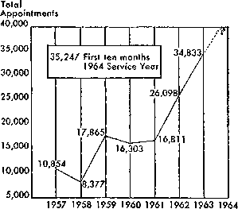

FOR UNITED STATES OF AMERICA
AUGUST, 1964 “Filled with the holy spirit and . . . speaking the word of God with boldness.”—Acts 4:31. VOL. VII NO. 8
Daily Walk and Talk with God
1 We appreciate that God talks to us by means of his Word, the Holy Bible. That Word instructs us to walk with him by staying close to him and by obedience to his commandments. It is also our responsibility to help others to walk with God. In order for other sincere persons to walk with God, we know that they must flee Babylon the Great. To help them to do that Jehovah has provided that flue instrument of liberation “Babylon the Great Has Fallen!” God’s Kingdom Rules! It is our happy privilege to use it again this month to liberate others, that they may learn to walk as God’s free servants.
2 With such a powerful instrument as the Babylon book to help others walk with God, let us endeavor to spend as much time as possible offering the book from house to house. The sermon surely arouses the interest of householders in the book. You will be able to gain some fine talking points for placing the Babylon book by your regularly attending the congregation
I OFFER FOR AUGUST ( J “ ’Babylon the Great Has Fallen!’ f I God’s Kingdom Rules!”
| THEME FOR AUGUST I ? Daily Walking and Talking with God. 7 |_ —Mic. 6:8.
book study. This will enhance your appreciation for the book and enkindle more enthusiasm for your presentation. Of course, when the book is not accepted, be ready always to offer The Watchtower and Awake!; that is, two magazines for 10c.
3 When you place a copy of the Babylon book, be alert to start a Bible study, possibly starting with the “Look!” booklet. If a study cannot be started when the book is placed, keep an accurate record of the placement and make definite arrangements for a return call, so the householder will be expecting you. Then urge him to start reading his newly acquired book before you call again.
4 As for territory, your congregation servant will check with the magazine-territory servant to see what territories remain to be worked with the Babylon book. They will arrange special group witnessing for such territories. If your congregation has unassigned territory, continue to concentrate efforts in that area, realizing that if you do not work the territory it will be at least another year before people living therein have opportunity to receive a witness.
Serve as a Vacation Pioneer
1 More and more publishers each year are commendably arranging to serve as vacation pioneers. A wonderful work and a grand witness have resulted from publishers’ arranging to vacation pioneer whenever it is possible for them to do so. Just what do the figures show the increase in vacation pioneers to be?
2 The chart to the right tells the story. From 797 appointments in 1948 the grand total rose to 10,854 in 1957, and then to 34,833 appointments in 1963! Note the rise, especially from 1961 onward. What will 1964 show? Already in 1964, for only the ten-month period from September through June, there have been 35,247 appointments, whereas during the same ten months last year there were 28,559 appointments.
3 Have you served as a vacation pioneer? If so, you know the added joy one has from this increased ministry. If you have not served as a vacation pioneer, the Society invites you to do so, feeling, as expressed in a letter to all congregations under date of June 1, 1954,
5 That our ministerial work is being blessed is evident by the many new ones being baptized at the “Fruitage of the Spirit” Assemblies. These newly baptized persons should be given a copy of the Preaching and Teaching in Peace and Unity booklet. Encourage them to study it. You will want to keep in mind that newly baptized ones need much help and assistance so they may continue to grow to maturity. Too often studies with newly baptized persons have been prematurely stopped, resulting in their becoming inactive. Continue to study with newly baptized ones until they finish at least “Let God Be True” and “This Means Everlasting Life.” (Continued on page 2, col. 3) when the two-week vacation pioneer arrangement was announced, that “it is an arrangement that will enable virtually every servant of
VACATION PIONEER APPOINTMENTS
Jehovah to enjoy pioneer service sometime during each service year.” In view of the nearly 300,000 publishers in the United States, it is readily seen that the potential is great.
(Continued on page J, col. 1)
Can you vacation pioneer at least once a year? *
SECOND MEETING IN AUGUST
5 min: Introduction, text and comments.
12 min: Theocratic News and Announcements—include assembly article.
18 min: Question-and-answer discussion of main article.
15 min: Presenting the Good News. Some questions and answers and a demonstration of points.
10 min: Concluding comments. (Include “What Happened Here in June?’’ and remarks on slogan at bottom of page 1.)
THIRD MEETING IN AUGUST
5 mtn: Introduction, text and comments.
15 min: Question-and-answer coverage of “Something New in Handbills.” 10 min: Talk on “Helping Unbelieving Relatives.” Base talk, with brief introduction, on “Yearbook” experiences.
We want to help as many as possible of our unbelieving relatives to learn the truth. Tactfulness and persistence are needed. Of special concern to the congregation is the unbelieving mate. Husbands may oppose simply because they are neglected, not invited to study. Such situations should be remedied. (84 fl4) One overseer, with help of others, gave special attention to nine families with opposed husbands. He found that difficulties could have been avoided in the beginning if studies had been started with entire family. (109 111) Sometimes proper conduct of wife is main way to help unbelieving mate, along with faithfulness in ministry, meeting attendance, teaching children. (246 UI; 171 U3) Can you help your unbelieving relatives? 20 min: What to Do When Persons Already Have Our Literature.
CHAIRMAN (2 min.) Often persons say they have our literature. They may feel taking it is an end in itself. What can we do when we meet them? Observe this publisher, see what suggestions you could offer.
SCENE I (4 min.) Publisher reads last scripture of sermon, offers “Babylon” book. Householder says he already has our books, does not feel he needs more. Publisher offers and places two magazines, leaves.
CHAIRMAN (3 min.) Audience is asked what could be done. Several comment. Invite to public talk; suggest he read literature; etc. Finally someone suggests starting study. Chairman agrees, stresses that we want to start studies as well as place literature. Aid householders in appealing, tactful way to appreciate that we want to help them to better understand their Bible. Literature is a means to that end; we want to be of even more help. We are happy to take time, free of charge, at their convenience to discuss and study Bible with them. Watch how this can be done.
SCENE IT (8 min.) Publisher reads last scripture of sermon, offers book. Householder says he already has our books. Publisher says “Fine.” Takes out two “Look!” booklets, mentions he undoubtedly has obtained some of these too. Inquires if he noticed questions at bottom of page. These stimulate thought, help to grasp meaning of material. Explains that purpose of literature is to further understanding of Bible. Questions are for home Bible study discussions. These were carried on free in over 700,000 homes worldwide last year. Asks if he might step in, offers to demonstrate this briefly. Reads and comments on message from “The Publishers” inside front cover, takes up one or two paragraphs, reading questions, then paragraphs, after discussing answers to questions. Raises another question to stimulate interest of householder, makes arrangements to call back at definite time.
CHAIRMAN (3 min.) The ultimate goal of our ministry is to make disciples. This requires that we teach and direct the “sheep” to Jehovah’s organization. Thus, every effort should be made to start a home Bible study with those who have our literature. Results in productive ministry.
10 min: Concluding comments. (Include slogan at bottom of page 4.)
FOURTH MEETING IN AUGUST
5 min: Introduction, text and comments.
25 min: Congregation Organization. Question-and-answer coverage, along with demonstration of points.
20 min: “Youths, Keep Your Integrity While at School.” School servant or other mature brother to give talk on this material from June 15, 1964, “Watchtower.” Use points under subheadings “Flag-Salute Ceremonies” and “Standing for Worldly Songs,” along with related Bible principles from first part of article. Urge all school-age publishers to be present; suggest that parents review points with children at home.
10 min: Concluding comments.
FIRST MEETING IN SEPTEMBER
Theme: Showing Others How Beneficial the Scriptures Are.
5 min: Introduction, text and comments.
10 min: Talk on monthly theme. (See “Watchtower,” November 1, 1963, pp. 649-663, also September 1, 1964.) 15 min: Question-and-answer discussion of “Serve as a Vacation Pioneer.” 20 min: Directing Interested Ones to the Organization.
CHAIRMAN (3 min.) We want to help the “sheep” to appreciate that Jehovah has an organization as well as to understand the Bible. Be alert to direct students to the organization after home Bible studies. One way we can do this is to invite persons studied with to attend public talks.
SCENE I (4 min.) Bible study servant talks to publisher who has conducted study for some time. Mentions that person studied with has not been at meetings. Is he directing him to organization? Publisher recognizes he should but does not know how. Servant suggests inviting him to public talk at Kingdom Hall. Use current handbill. Illustrate how to highlight subject, using questions talk will answer. Explain how meeting will be a conversational presentation of Bible subject without any ceremony or ritual. People from entire community invited to attend. Encourage to bring Bible. May ask questions of speaker after talk if he desires. Lasts just one hour. No collections ever taken. Offer transportation. Publisher appreciates suggestions, will try them.
SCENE II (4 min.) Study has just ended. Publisher says it was enjoyable study. Commends student for progress. Offers householder a handbill, highlights subject. Whets his appetite by raising questions. Follows suggestions given above, warmly invites him to public talk. Student says he will try to come.
SCENE HI (3 min.) Publisher tells servant it did not work?. Student did not attend. Servant says not to be discouraged. Continue inviting him to come. Explain interesting points he missed. Do not scold him. Could say, ‘I was sorry you could not make the talk last week. It was a fine Bible talk. The speaker brought out . . . (mention some interesting points from last week’s talk).’ Then stimulate his appetite for next week’s talk. Offer to stop by and pick him up. Suggest definite time.
SCENE IV (4 min.) Publisher demonstrates above suggestions after concluding study. Householder promises to be ready at time mutually agreed upon.
CHAIRMAN (2 min.) Warmly welcome new ones. Show them around hall, introduce to friends, make them feel at home. Help them see firsthand that Jehovah has an organization that will benefit them. Continue encouraging interested ones to associate with it.
10 min: Concluding comments.
Daily Walk with God (Cont'd)
For details see Kingdom Ministry, August 1963.
6 Also, you will want to give care and attention to newer publishers. See that they are assisted to share in the ministry and to press on to maturity. Help them with magazine presentations and with the use of the simplified sermon. Those who have recently been started in the service, as well as newly baptized publishers, can most effectively be aided through the assistance arrangement outlined in the June, July and August issues of Kingdom Ministry.
7 As for you parents, can you put forth special efforts this month to assist your children? Try to take advantage of the added hours to train them in the ministry. Appreciating that your children will be back in school before long, you will want to help them to have a full share in this month’s ministerial activities.
8 As you daily walk and talk with God, pray for his blessing on your efforts to reach your ministerial goals during this last month of the service year. Try to spend at least ten hours in the field ministry. If you are away from your congregation, be certain to mail your report to the congregation at the end of the month. Our diligent ministerial efforts will show that we want to walk with God now so we can walk with him in his New Order, after Armageddon and on into endless eternity.
Something New in Handbills
1 It has been nineteen and a half years since we inaugurated the public meeting campaign in January 1945. You will be interested to know that since that time the Society’s Brooklyn plant alone has printed and sent out for use over two thousand million handbills of the current style, to advertise a total of 160 regular public talk subjects, as well as special talks and circuit and district servant lectures. Now, however, new provisions are being made to advertise our weekly Bible talks and other regular meetings.
2 Instead of only the one style of handbill that has been in use for nearly twenty years, we will have four different ones. The presentstyle No. 1 handbill will be reserved for advertising special talks such as circuit and district servant talks. Then the No. 2 style of handbill, although the same size, will advertise two talks with speakers’ names. It can, therefore, be used for two weeks instead of one, and only four different handbills will be needed for a series of eight lectures.
3 The No. 3 style is a four-page handbill that will advertise four talks without speakers’ names. The front page will have a catchy slogan printed in large type to attract attention. Then on page two there will be a short message encouraging attendance at the four lectures that are listed on the opposite page. On the bottom of this third page the time and place of the talks will be given. In order to give variety to this handbill, the design and subject material of the first two pages will be changed from time to time. Since this handbill will be exactly twice the size of the other three, its price will be fifty cents a thousand, instead of twenty-five cents.
4 The No. 4 style of handbill will advertise the five weekly meetings of Jehovah’s witnesses, giving the time and place, along with a brief description of each meeting. It can be called “meeting invitation handbill.” These handbills can be used year after year—as long as your time and place of meeting remain unchanged. All four styles will have a Bible sermon on the back, just as our present handbills do.
5 Certainly there are many advantages in this selection of handbills, Nos. 1, 2, 3, 4, and we will want to make good use of them. If we come down to the last talk advertised on the four-page handbill and still have some left, a concerted effort should be made to get all of these out. Perhaps the children along with regular publishers in the congregation can be assigned sections close to the King-
The Assistance Arrangement (Part 3)
1 In the June and July issues of Kingdom Ministry the Society discussed the purpose of the assistance arrangement and the role of the overseer and the study conductor in making this arrangement a success. We are now pleased to discuss the role of the more experienced publisher taking the lead.
2 For desired results the publisher taking the lead should share regularly in the service with the one(s) being assisted. The two should sit down together and work out a practical schedule for weekly participation in the service. This schedule should be a reasonable one, in harmony with the personal circumstances of each one. Once a schedule is worked out, every effort should be made to adhere to it. When the two work together in the service each week and the training is kept progressive, fine advancement results.
3 If the one being aided does not respond to the assistance rendered or slows down after responding for a time, discuss the situation with the overseer or your study conductor. Appropriate suggestions and encouraging counsel usually will aid the publisher to succeed in helping the one being assisted. If, after
Announcements
0- Actual-count inventory of literature is to be taken by all congregations on September 1. Two literature inventory forms are being sent to each congregation with the monthly statement. The original should be filled out and returned to the Society no later than September 5. Retain the duplicate for the congregation’s file.
Congregations are being sent a new chart and a supply of congregation monthly report cards and magazine distributor’s order blanks. No chart instructions are being sent, as these should be in your file. Congregation servants who have not yet ordered a supply of 12 report cards for each regular pioneer with the congregation should do so right away.
❖ All congregations are encouraged to arrange magazine activity on Labor Day, September 7.
♦ Literature offer for September: “Babylon the Great Has Fallen!” God's Kingdom Rules! and a booklet, for 75c. October: Subscription for Awake! and three booklets, for $1.
The name and address of each regular pioneer should be printed,
dom Hall, and they can go around putting the excess handbills under the doors a few days before the public meeting. By everyone keeping alert to use these new provisions wisely, the Kingdom message will receive even greater advertisement.
determining what is needed, the overseer or study conductor feels that it is advisable to talk personally to the one being assisted, this should be done. Publishers assisted should always be encouraged in a kind way. If the one being assisted does not have sufficient spirituality, a study may be conducted to help him increase his knowledge and faith. This will build up confidence in Jehovah and his organization and a desire to share regularly in Kingdom activity. Publishers assisting others should always feel free to discuss matters with the overseer or their study conductor, both of whom will be pleased to help in any way they can.
4 The benefits of the assistance arrangement are many. It is an organized way to give needed encouragement and assistance regularly to new and less mature publishers by providing warm, personal aid on a friendly, flexible basis. Greater regularity and effectiveness in the field will result as well as maturity and a more balanced ministerial activity. Also, it will qualify more publishers for use in training others to become effective teachers. What rewarding prospects! Let each one of us share in the assistance arrangement to the full so that each one may be strengthened for the work ahead.
typed or legibly written on the pink monthly report card sent to the Society. Congregation servants should check this before signing the card. Use only pink cards for regular pioneers and yellow cards for vacation pioneers. Pioneer reports should be in the mail by the 3d of each month..
♦ No later than the fifth day of each month congregation servants should send in the field service report for the entire congregation.
Identification cards now in use expire August 31, 1964. New cards are available at the rate of two cards for one cent. Only baptized publishers and pioneers who regularly engage in the house-to-house work and who are capable of doing so alone qualify for these identification cards.
+ Brothers desiring information concerning the proper procedure for making gifts to the Society and about writing wills so the Society may benefit from their estates in event of death may write for a copy of “Information Regarding Gifts and Wills,” which is now available to anyone who desires a copy. Address the Society, Office of the Secretary and Treasurer, 124 Columbia Heights, Brooklyn, New York 11201.
♦ New publications available:
“Let Your Name Be Sanctified”
—Cebu-Visayan, French “Your Will Be Done on Earth”
—Hiligaynon-Visayan, Polish Tract 8—Life in a New World
—Herero
THE GOOD MEWS
Brief Magazine Presentations
1 Magazines have been instrumental in helping many persons to come to an accurate knowledge of the truth. Therefore, all publishers will want to have a full share in placing magazines wherever possible. This can be done by giving full support to Magazine Day activity, offering the magazines from store to store and from house to house. Magazine routes can be established and also the two magazines can be presented when the regular offer is refused.
2 What are some points to keep in mind regarding magazine presentations? For the most part, magazine presentations should be kept simple and brief. It is very important to have a friendly smile and a friendly tone of voice. Keep in mind the need of using good articulation and having an unhurried delivery. Being ■well acquainted with the material in the magazines will enable you to be enthusiastic. While both magazines are offered, you will want to have one theme and then tie it in with the magazine you are featuring. Highlight one article and make a practical application to show its value to the householder. When placements are made, obtain the householder’s name and arrange for a return visit, with a view to
Vacation Pioneer (Cant’d)
4 Just as you plan your personal vacations, attending assemblies and doing many other things during the course of the year, why not plan to be a vacation pioneer? This service is open to all regular publishers who have been baptized. Servants, take the lead in this by becoming vacation pioneers yourselves, and organize groups in the congregation to vacation pioneer together during any convenient period in the year. Publishers, vacation pioneer whenever you can and encourage another publisher in the congregation to vacation pioneer with you. Holidays, school or secular vacations, periods when you are not doing seasonal work, the circuit servant’s visit or any other time can be wisely used in praising Jehovah’s name. Select the time that suits you best and, if possible, plan to serve as a vacation pioneer at least once a year.
starting a magazine route. When the offer is refused, use a friendly and positive conclusion, leaving the householder in a good frame of mind.
3 In offering the August 15 Watchtower from house to house you may want to say: “The purpose of my brief call is to discuss a matter of mutual concern. I believe you will agree that we are living in a time when there is much unrest and strife. Perhaps you have wondered Just what can be done to cope with problems such as the racial issue. This article ‘The Identifying Mark of Love’ shows how an application of Bible principles will solve such problems. This copy of The Watchtower along with the latest Awake! may be yours for a contribution of only ten cents.”
4 If the regular offer is refused you could say: “I am glad I could talk to you for a few minutes. I would like to leave the latest Watchtower and Awake! magazines with you on a contribution of just ten cents for the two. I believe you will find this article in the Awake! (of August 22) on ‘When People Defy the Law’ of particular interest.” You could then briefly comment on the article and hand the two magazines to the householder.
JUNE SERVICE REPORT
Av. Av. Av. Av.
Pubs. Hrs. B-C Bi.St. Mags. Sp’l Pios. 715 135.8 51.5 7.6
Vac. Pios. 5,053 81.2 16.6 1.6
TOTAL 291,135
Public Meetings Held: 25,001 UNITED STATES QUOTA FOR 1964 308,057 Publishers
WHAT HAPPENED HERE IN JUNE?
It is encouraging to observe that this summer is proving to be the outstanding summer for vacation pioneers to date! We had a wonderful total of 5,053 for June, which is excellent. A year ago we had 3,834 vacation pioneers in June, so there has been a fine increase of 1,219 vacation pioneers. And, it is pleasing to say, applications continue to pour in to the Society’s office at a good rate. Any who can yet vacation pioneer this summer are encouraged to do so.
Also, you will be glad to know we had a new peak in the number of regular pioneers for the 23d consecutive month. How good it is to see this zeal on the part of Jehovah’s people for advancing true worship!
THEOCRATIC HiWS
4^ Atlantic City, NJ., location of first “Fruitage of the Spirit” Assembly in U.S.A., had record attendance of 32,433, compared with 23,052 for previous district assembly there. 422 were baptized. Owensboro, Kentucky, where 5,341 attended, reports that it was wonderful to see almost everyone in his seat and paying good attention during the sessions. Forty-seven were baptized.
4k World report for April 1964 shows 11.3-percent increase, with 1,064,387 publishers reporting from 187 countries. Prospects for expansion good, as 800,315 Bible studies were conducted in April. 4k Memorial attended by 1,807,099, with 1 1,970 partaking.
^Sixteen symbolized their dedication in Cyprus and 748 attended showing of the new film.
4k A brother who followed “Kingdom Ministry” suggestion to place Bibles with hotel and motel owners, placed 6 with one motel owner and 25 with another in California. The owners were “so glad to get one for each room and wanted them right away.”
♦ Solomon Islands and Togoland reached new peaks in May. Even with many new ones reporting, publishers averaged over 19 hours each in both territories.
4k Showings of new film in Caribbean islands attract many. On Barbados 1,956 attended; on St. Lucia, 450; and on St. Vincent, 520.
4kSaki$hima Islands in East China Sea visited by circuit servant for first time and 8 shared in service. Public talk attended by 61.
$ Continued growth of the work in Japan expected as new peak of 3,318 publishers conduct 4,829 Bible studies in May.
ASSEMBLIES
1 “Just what we needed”—such is a typical remark of those who have attended one of the “Fruitage of the Spirit” Assemblies this year. For, indeed, the fruitage of God’s holy spirit is needed; without it we cannot please God. There are still fourteen of the assemblies remaining. If you have not yet attended one, there is nothing more important that you could have on your August agenda than the “Fruitage of the Spirit” Assembly. Take action immediately to attend, writing the city of your choice for rooming accommodations.
2 Attend by all means! And be conscious of your spiritual needs by taking in ALL the sessions for ALL four days of the assembly.
* Use the “Babylon” book to help others to walk with God. *
Published monthly by Watchtower Bible and Tract Society of New York, Inc., 117 Adams St.. Brooklyn, N.Y. 11201 Second-class postage paid at Brooklyn, N.Y. Printed in U.S.A.
4